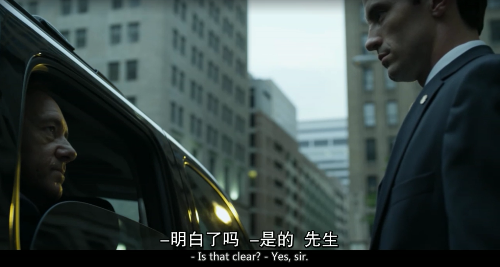

emmmm 据说《甄嬛传》这样的片子在电影分类里有个专门的标签，叫做“宫斗”，喜欢看宫斗的男生我只认识一个，而且他还喜闻乐见的是个gay；
但不得不承认的是，如果有人想要把今天我推荐的这部片子贴上“宫斗”的标签，我还是会义无反顾的承认“I LOVE IT”，嗯没错，我不看甄嬛传，但我喜欢这部片子，所以无论你接下来打算引申出什么定论，或者给它贴什么标签，我还是很想推荐一下这部片子，史大叔的《纸牌屋·HOUSE OF CARDS》（撒花）；
生于1959的凯文-史派西，父亲是个专业作家，母亲是个秘书。
幼时被送于洛杉矶诺斯雷治军校，因斗殴事件遭逐出，后转学查斯沃斯中学，在那时期开始了他的舞台表演生涯。
1981年，在舞台剧《公园》（Park）一剧中，凯文-史派西的出色表演引起了舞台剧导演汤姆-斯托帕德的注意，此后更是得到著名电影导演迈克-尼科尔斯的青睐。
在好莱坞，如果说吉姆-凯瑞是脸善变的演员，那凯文-斯贝西绝对是性格善变的演员。凯文的演技深沉内敛，独树一帜，出神入画的演技，性格各异的角色给人留下深刻的印象。（emmmm左边的照片总让我想起另一个人……）
他尤其擅长饰演各种阴险狡诈的反派人物，出演过大量道德上有问题的人物，是著名的黑色演员。
曾两获奥斯卡（1995《非常嫌疑犯》（The Usual Suspects）、2000《美国丽人》（American Beauty））1999年英国权威电影杂志《帝国》（Empire）授予他”10年来最佳男演员”的称号。2006年，时代周刊评选的90年代后最优秀男演员，凯文史派西力压汤姆汉克斯，高居第二，排在第一的是同样阴沉善变的丹尼尔戴路易斯。【摘自豆瓣】
本片根据Michael Dobbs的同名政治小说改编。
描述的是因为史派西扮演的Francis和妻子Claire自结发之日起就图谋在政坛有一番作为，Francis为人英明狡诈，对国会政风了如指掌；在他尽职尽责（自己说的）将本届总统Garrett Walker扶持上政之后，本指望得到国务卿一职，离开国会施展自己下一步计划；谁知在公布当天，得到总统幕僚长Linda的告知，自己因为各种原因需要被留任国会，而替他接任国务卿的是另一个跳梁小子，盛怒之下的Francis发誓要报复包括总统在内的所有人；
于是一场华盛顿白宫的天空下风起云涌的政坛大战就此拉开序章。
和95年的The Usual Suspects 一样，史大叔在这部片子里扮演的依然是一个聪明绝顶，狡诈过人的角色。而且片中很多片段和台词的设定都非常出色，搭配史大叔的演技，想必会一改你对很多标签的原有看法。嗯是的，这是一部刷新三观的片子。一起来看看吧~
要说这是一部励志片，我也认，因为对Francis这个角色的塑造“迎难而上”绝对是首当其冲的一个词。
A person’s character isn’t determined by how he or she enjoys victory, but rather how he or she endures defeat.Nothing can help us endure dark time better than our faith.
一个人的品行不在于看他或她如何享受成功，而在于他如何承受失败。没有什么能够比信仰更能支撑我们度过艰难的时光了。（然而我们的Francis信仰谁呢？后面揭晓[滑稽]）
Forward! That is the battle cry. Leave ideologies for the Armchair General, does me no good.
勇往直前，这就是我的口号，纸上谈兵的那一套对我来说没有意义。
This is the worst possible positin to be in. If I water down the bill, the president will still see me as a failure. If the strike dosen’t end in a week, I forced myself into a corner.
Only total victory will put me back in his good graces. The alternative is exile. which would mean the last five months where for nothing. I cannot abide falling back to square one.
这绝对是最糟糕的境地，如果我修改法案，总统还是会认为我失败了，但如果罢工一周内无法结束，那我等于把自己逼到墙角。只有绝对的胜利才能重获他的青睐，否则就是出局。那过去的五个月就白费了，我决不允许自己跌回原地（这段和剧情联系比较紧密，可以看完再来回顾一下）。
第一季里总统刚上任便委派Francis牵头制定的这套教育改革法案绝对是重头戏；上面的三段台词是按照时间线展开的，这套法案的改革和实施的过程把史大叔在整部剧中的人物性格，情感基调和行事作风展现的淋滴尽致；写书的老姐跟我说过一部作品成功与否的关键就在于你开篇的时候是否能迅速的抓住观众（读者）的眼球；是的我们不否认市面上和历史里有很多慢热类型却依然传唱不息的作品，但影视剧的特殊在于，它事实上比你想象的更功利一些；有兴趣的小伙伴可以去翻翻《指环王》（The Lord of the Rings）的拍摄历程；House of cards在这方面绝对是一把一的好手，我个人在观影的时候就比较喜欢情节跌宕起伏悬念丛生的类型，而纵观我的观影单，除了The Shawshank Redemption和上面提到的The Usual Suspects以外，确实很少有在开篇无法激起我的兴趣却能让我坚持看完的片子了；
要说史大叔是这部剧里上好的菲力牛排，那佐餐的绝佳红酒非Claire莫属；
这部剧的爱情观让我重新审视了一个词，或者说，很早以前我就认为这个词的解释应该如此，只是现在好到了绝佳的具现化范例—— SOUL MATES
有人说Francis和Claire的结合是典型的“政治联姻”，小剧透一下，这个观点导演在第二季里也借助剧情说了出来；但我觉得你试着退一步看，哪场婚姻没有些许的目的和利益动机在里面呢（emmmm抱歉打破了很多人的幻想_(:3JZ)_ ），两个灵魂的结合在于发现了彼此的长处和能够互补的理由，于是愿意执子之手与子偕老；每个人都有自己对另一半的期许，所以从结论而言没有什么不公平的；
看看史大叔写的啥？
You don’t need SAN CORP… You have me!
这个桥段可以联系前后剧情感受一下，我觉得真的是这对CP关系的很微妙的写照，看过了依然不明白的我可以小科普一下，这张照片是在两人州立竞选的时候拍的，Francis和Claire的结合是两个灵魂发自内心深处的相互认可和依赖；We have each other, we need each other. 这是我看完第一季对他俩关系的最大感受；
煽情了这么久，来看点官方狗粮欢乐一下吧~
（独白版）
I love the woman. I love her more than sharks love blood.
我爱这女人，甚于鲨鱼爱鲜血。
（对白版）
Claire: How are we doing?
Francis: Good. Progress. Iron on the fire.
Claire: I like irons, But I love fire.
克莱尔：进展如何？
弗兰西斯：还不错，铁烧的正热。
克莱尔：我喜欢铁。嗯…但更爱火。
Claire: Give it a try first.
Francis: Is this your subtle way of saying that I’m out of shape?
Claire: No, it’s my way of suggesting you could be in better shape.
Francis: That sounds both passive-aggressive and condescending.
Claire: Just plain aggressive and true. Don’t wait up for me.
Francis: Are you going running now?
Claire: Yes, because I counldn’t this moring. I had an early meeting.
Francis: Use the monstrosity. It’s freezing out.
Claire: You break it in.
克莱尔：试试看嘛。（两人在讨论划船机）
弗兰西斯：你这是在委婉的表示我的身材走样了吗？
克莱尔：不，我只是觉得你的身材能变的更好一点。
弗兰西斯：这听起来像是以退为进，但又居高临下。
克莱尔：我这是以诚为进，不用等我了。（克莱尔说着准备出门）
弗兰西斯：你这个点要出去跑步？
克莱尔：怼，因为我早上没跑成，有个晨会。
弗兰西斯：外面那么冷，拿这个怪物锻炼吧。
克莱尔：你先来啊。（笑着逃走）
这算是两段比较甜的，两人的感情线在整个剧里算是一抹恰到好处的调味剂，啊不对，应该是整个剧的另一条主线；如果你连着三季一起看，会发现两人的情感关系随着剧情的发展同样是纷杂万千；两人分别在各自的领域中都扮演着强势领头的角色，给人雷厉风行万般不侵的感觉，但当两人在一起的时候，你却又能感受到彼此的依赖和那种细腻的情感；Francis对于Claire的爱常常表现在细节里，剧里很少有直接表达的时候；但Claire在第一季里有一次对两人婚姻的描述，给了很多人对于这段感情一个极其深刻的印象；
You know what Francis said to me when he proposed? I remenber his excet words, He said ‘Claire,if all you want happniess,Say no,I’m not gonna give you a couple of kids and count the day until retirement. I promise you freedom from that and I promise you’ll never be bored.You know he was a only man and there were a lot of other who proposed. But he was only one understood me. He didn’t me some pedestal.He knew that I didn’t I want to be adored or coddle. So he took my hand and put a ring on it. Becuase he know I’d say yes. He’s a man who knows how to take what he wants.
你知道Francis在向我求婚的时候是怎么说的吗？我现在还记得他说的每一个字。他说Claire，如果你想要得到幸福，那就拒绝吧。我不会和你生一堆小孩儿然后数着日子等待退休，我保证你不必遭受那些痛苦，但你的人生也绝对不会感到无趣。要知道，有过很多人向我求婚，但他是唯一一个懂我的。他从未把我当做什么女神，也知道我不渴望被溺爱或者崇拜。于是他说完就拉起我的手，为我戴上了戒指。他知道我不会拒绝。他总是懂得如何获取他想要的东西。
不知道大家的感受，但我看完这个片场后脑子里唯一剩下的单词就只有一个了，那就是SOUL MATES（嗯我脑子里单词本来就不多）；但如果仅仅是停留在高冷女神接受屌丝逆袭这样的桥段，我对这两人的感触不会有这么深刻；毕竟这世上吸引你的，往往是那些稀有的存在不是么；如果你留心观察在第一季里两人的情感关系，就会发现它远超过表象展现的那么简单；如果真的硬要找一个比较合适的形容，我觉得比较合适的应该是——FIRE AND IRON，纵观三季，Francis和Claire的情感线能让你从另一个角度看待这场政坛大战；
除去主角，这部剧里的各个配角也是可圈可点，可以说每个角儿都有自己独立的性格以及在整栋Hous of cards中担任着不可或缺的那一张牌；就第一季里来讲，我印象最深的除了尽忠职守的小帅哥保镖Mecham以外，就是这个前两季最大的倒霉蛋，Walker总统了，要说感觉嘛，emmmm 一言蔽之：攻受分明 =w = 其实这不能全怪Walker，想来史大叔扮演过的各路角色，你都不难从他身上体验一种感觉：霸道的控制欲；于是他的各路对手理所当然的就成了他霸气的陪衬品；可以来看看两人第一次正面冲突（我没记错的话），当然最终的结果是显而易见的；
Walker: Are you letting pride cloud your judgment, Frank?
Francis: Respectfully, Sir, you’re allowing fear to cloud yours.
Francis：（soliloquy）Not an easy thing to say NO to the most powerful man in the free world.But sometimes the only way to gain your superior’s respect is to defy him.
沃克：你是不是被骄傲冲昏了头，弗兰克？
弗兰西斯：恕我直言，恐怕是您被恐惧冲昏了头脑，总统阁下；
弗兰西斯：（独白）对自由世界最有权势的人说”不”可不是一件容易的事，但必要的时候，>想赢得上司的尊重，就只能违抗他。
另一位不得不提的就是这位帅帅的，戏份不多但总是能意料之外的博人眼球的保镖同学：Edward·Mecham
能被Francis收入后宫历来都不是泛泛之辈（咦用辞好像方向越来越不对了[滑稽]）；其实看到他，再联想起Francis在Delaware流域法案中的表现，即设法将总统幕僚长的儿子送入斯坦福的桥段；都能感觉到Francis向来是一个善于抓住机遇的人，他经常做一些”即时兴起”的投资，即便是他当时并未觉察到回报有多大；如果这部剧表现的不太明显，那强烈推荐去看The Usual Suspects，这绝对是将史大叔扮演角色的这种能力凸显到登峰造极的程度；
为啥我对Mecham的评价如此之高，其实要需要联结前三季来看了；如果你要从Mecham身上顺出一条时间线，那么可以轻而易举的看出这个角色和Francis在整部剧中的变化，而两人在剧中的对白其实并不多，但和Walker总统一样，很容易从中感受到Francis在这整部剧中的角色品性；
第一季的另一个特点，就是经常会有一些标志性的对白来将剧中两人以后的关系刻画的劈两分星；
From this moment on, You are rock, you absorb nothing, you say nothing, and nothing breaks you.
这一刻起，你就是一块磐石。万物不侵，丝毫不吐，且无坚不摧。

其实第一季可圈可点的地方太多了，而且我表述仅仅是个人的看法和我比较喜欢的部分细节；一部好的作品最大的特点就是当你和任何一个看过他的人谈论的时候，很多话题和想法都能自然而然的延展开来；而每一次温故，都能像陈酒那样让你体验到新的东西；
我相信看到这里一定会有人吐槽“哎这哪里是讨论纸牌屋啊，明明是博主跪舔史大叔的噱头标题嘛”，Unfortunately, Yes 但我确实是通过这部剧知道史大叔的，而看完他的一些作品之后，我依然认定这部剧是对史大叔演过的各路角色的最精彩的诠释，最后送上一句他的箴言，算是回答上文里提出的一个小问题；
There is no solace above or below.
Only us … Small, solitary, striving battling one another.
I pray to myself for myself.
天堂和地狱都无法给你慰藉，唯有我们自己，渺小，孤独，奋斗，与彼此抗争。
我为自己，向自己祈祷。
【The End】